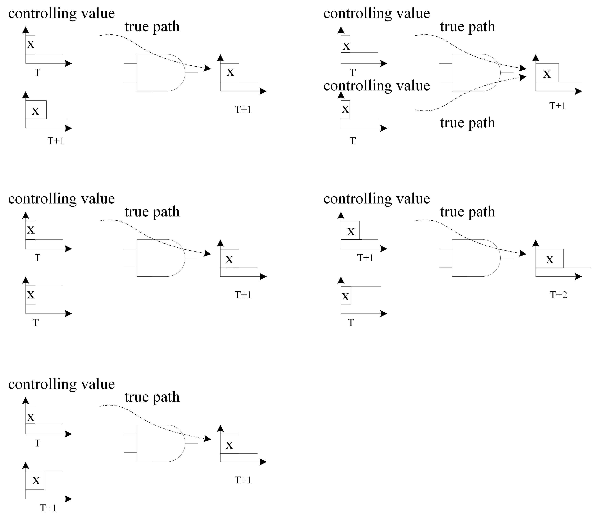
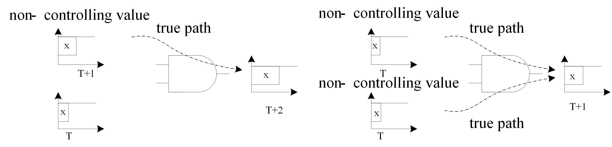
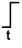
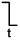
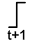
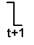
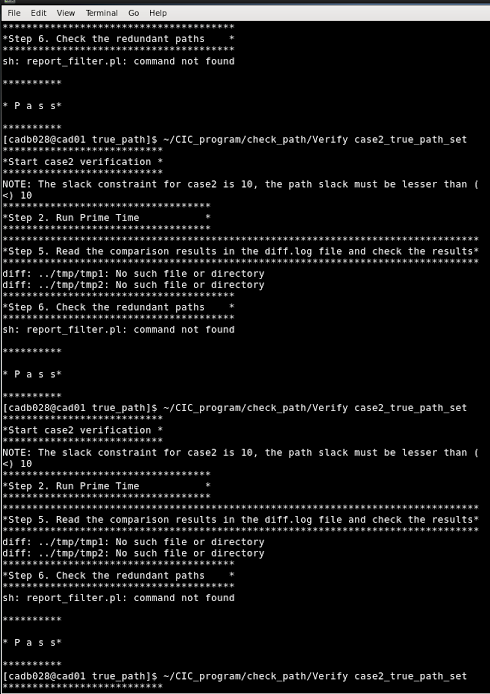

ICCAD 2016 Contest
Static Timing Analysis
Chun-Ming Huang and Wei-Chang Tsai
國家晶片系統設計中心 (CIC), Taiwan
I. Introduction
STA(Static Timing Analysis) is an electronic design automation method/technology tool that can report critical paths, each of which is characterized by a transition at each node along the path, when applied to a digital circuit. STA is a method of validating the timing performance of a design by checking all possible paths for timing violations.
As the size and complexity of IC's continue to grow, a large amount of STA time will reduce the efficiency of a VLSI design flow. By employing multi-core computers, a parallel STA may be one of the best ways for achieving greater speed and higher accuracy. How to balance the communication overhead and computation loading among the cores will be the challenge in this case.
II. Problem Description
STA Tools are used by designers to determine whether the timing requirements of a design are met. STA has a well-known false path problem. This contest problem is to design an STA program for combinational logic circuits under a multi-core computing environment. The input of an STA program is a Verilog gate-level netlist whereas the output will be a list of true paths.
Several benchmarks will be given to verify your program. Though a parallel STA is illustrated, you can still use Floating-mode inside your program as long as the correctness of the program is guaranteed.
Note that an STA program is designed only for combinational logic circuits. Don’t waste your time optimizing your program for sequential circuits
III. Goal
The goal is to develop an efficient STA program to find the true paths under a given multi-core computing environment. A so-designed STA program should have the ability to handle Floating-mode in combinational logic circuits. An evaluation set consisting of several benchmarks is provided for verifying your program. A benchmark is a combinational logic circuit in the form of a Verilog gate-level netlist. For each benchmark, your program must find true paths under the predefined slack constraints shown in Table 4-1 and Table 4-2. Run-time spent for each benchmark will be also used for grading your work. You will have a better grade if the run time is less.
IV. Terminology
Delay Time:
Fig.1
Graph model for delay through a combinational circuit.
When building the graph of Figure 1, we assume that some standard driver charges or discharges the input’s wire load capacitance and a standard capacitive load is attached to each output. To change the value at only one input and determine how long it takes for the effect to be propagated to a single output. Of course, there must be a path from the selected input to the output. That delay can be found by summing the delays along all the edges and nodes on the path from the input to the output. Assume the node delay (gate delay) is 1ns. In Figure1, the path from B[0] to M[1] has two edges and one node with a total delay of 6ns. In order to simply this problem, the edge (wire) delay is set to zero. the node (gate) delay is set to 1ns, and all nodes are nand/nor/not logic gate.
True Path:
Fig.2
Boolean gates creating true delay path.
The upper input of the NAND gate goes low first in Figure 2, followed by the lower input. Either input going low causes the NAND’s output to go high. However, after the upper input has changed, the high-to-low transition of the lower input doesn’t affect the gate’s output. The path through the upper input is a true path. Even if the false path is longer than any true path, it won’t determine the network’s combinational delay because the transitions along that path don’t cause the primary outputs of a network to change.
Floating-mode:
A path is true if you can find an input vector that sensitizes the path. i.e. a change of value at an input should propagate through the path to its output. Sensitization is determined using Floating-mode delay, in which all nodes are assumed to be in an unknown state before the application of an input vector.
The sensitization criteria for each gate on a path are as follows:
- 1. The online signal of our interest is a controlling value, and no side inputs with controlling values arrived earlier (all side inputs must be non-controlling or later arriving). If one or more than one inputs are controlling value, the output value will keep the same no matter how the other inputs change. Therefore, the controlling value of AND and NAND gates is logic 0 and the controlling value of OR and NOR gates is logic 1. An example for explaining the concepts of controlling values and true path are shown in Figure 3. 
Fig.3
Controlling Values pf an AND gate
- The online signal is a non-controlling value. All other side inputs are non-controlling, and no side input arrives later than the online signal. An example for showing non-controlling values is shown in Figure 4.

Fig.4
Non-controlling value of an AND gate
Definition of the justification rules for all logic gates:
Note: T means true path, and F means false path.
| NAND2 | NOR2 | NAND2 | NOR2 | ||||
| a |  | T | T | a |  | T | F |
| b | T | T | b | F | T | ||
| NAND2 | NOR2 | NAND2 | NOR2 | ||||
| a | F | T | a | T | T | ||
| b | T | F | b | T | T |
Table 1-1 The true and false path of a logic gate when inputs arrive simultaneously.
| NAND2 | NOR2 | NAND2 | NOR2 | ||||
| a | F | T | a | T | F | ||
| b |  | T | F | b | F | T | |
| NAND2 | NOR2 | NAND2 | NOR2 | ||||
| a | F | T | a | T | F | ||
| b |  | T | F | b | F | T |
Table 1-2 The true and false path of a logic gate when input a arrived faster than input b.
| NAND2 | NOR2 | NAND2 | NOR2 | ||||
| a | T | F | a | T | F | ||
| b | F | T | b | F | T | ||
| NAND2 | NOR2 | NAND2 | NOR2 | ||||
| a | F | T | a | F | T | ||
| b | T | F | b | T | F |
Table 1-3 The true and false path of a logic gate when input b arrived faster than input a.
| NOT1 | ||
| a | T | |
| a | T |
Table 1-4 The true and false path of buf1 and not1 gates
V. Input Format
The input files contain a Verilog gate-level netlist and its associated Verilog model.
- Verilog model
Verilog model is a structural model composed of Verilog primitive gates without timing information. The following shows an example.
module NAND2(Y, A, B);
input A, B;
output Y;
nand(Y, A, B);
endmodule
module NOR2 (Y, A, B);
output Y;
input A, B;
nor (Y, A, B);
endmodule
module NOT1 (Y, A);
output Y;
input A;
not I0(Y, A);
endmodule
Figure 5:An example of Verilog model
- Verilog gate-level netlist
The following shows an example of a network of logic gate.
module mul2 ( M, A, B ); output [3:0] M;
input [1:0] A;
input [1:0] B;
wire n1, n2, n3, n5, n6, n7, n8, n9, n10, n11, n12, n13, n14;
NOT1 U1 ( .A(n13), .Y(n1) );
NOT1 U2 ( .A(n11), .Y(n2) );
NOT1 U3 ( .A(n9), .Y(n3) );
NOT1 U4 ( .A(n14), .Y(M[0]) );
NOT1 U5 ( .A(B[1]), .Y(n5) );
NOR2 U6 ( .A(n6), .B(n7), .Y(M[3]) );
NAND2 U7 ( .A(B[1]), .B(B[0]), .Y(n7) );
NAND2 U8 ( .A(A[1]), .B(A[0]), .Y(n6) );
NOR2 U9 ( .A(n5), .B(n8), .Y(M[2]) );
NAND2 U10 ( .A(A[1]), .B(n3), .Y(n8) );
NOR2 U11 ( .A(n10), .B(n11), .Y(n9) );
NAND2 U12 ( .A(n12), .B(n1), .Y(M[1]) );
NOR2 U13 ( .A(n10), .B(n2), .Y(n13) );
NAND2 U14 ( .A(n2), .B(n10), .Y(n12) );
NAND2 U15 ( .A(B[1]), .B(A[0]), .Y(n10) );
NAND2 U16 ( .A(B[0]), .B(A[1]), .Y(n11) );
NAND2 U17 ( .A(A[0]), .B(B[0]), .Y(n14) );
endmoduleFigure 6:An example of Verilog gate-level netlist -2 bits multiplier
VI. Output Format
The outputs of your program are the true paths packed in a single true path set file for the specific test case. The true path set file is a file listed all true paths, the input vector for justifying the true path, and the results of STA for a specific case. The format of the true path set file must be the same with the example shown in Figure 7 and the result can be verified by the program provided by CIC. Note: the gate and path delay must be an integer number.
Header { A True Path Set }
Benchmark { case1 }
Path { 1 }
A True Path List
{
---------------------------------------------------------------------------
Pin type Incr Path delay
---------------------------------------------------------------------------
A[1] (in) 0 0 f
U16/B (NAND2) 0 0 f
U16/Y (NAND2) 1 1 r
U2/A (NOT1) 0 1 r
U2/Y (NOT1) 1 2 f
U13/B (NOR2) 0 2 f
U13/Y (NOR2) 1 3 r
U1/A (NOT1) 0 3 r
U1/Y (NOT1) 1 4 f
U12/B (NAND2) 0 4 f
U12/Y (NAND2) 1 5 r
M[1] (out) 0 5 r
--------------------------------------------------------------------------
Data Required Time 10
Data Arrival Time 5
--------------------------------------------------------------------------
Slack 5
}
Input Vector
{
A[0] = 1
A[1] = f
B[0] = 1
B[1] = 1
}
Path { 2 }
A True Path List
{
---------------------------------------------------------------------------
Pin type Incr Path delay
---------------------------------------------------------------------------
A[0] (in) 0 0 r
U17/A (NAND2) 0 0 r
U17/Y (NAND2) 1 1 f
U4/A (NOT1) 0 1 f
U4/Y (NOT1) 1 2 r
M[0] (out) 0 2 r
--------------------------------------------------------------------------
Data Required Time 10
Data Arrival Time 2
--------------------------------------------------------------------------
Slack 8
}
Input Vector
{
A[0] = r
A[1] = 1
B[0] = 1
B[1] = 1
}
Path { 3 }
A True Path List
{
---------------------------------------------------------------------------
Pin type Incr Path delay
---------------------------------------------------------------------------
B[1] (in) 0 0 r
U7/A (NAND2) 0 0 r
U7/Y (NAND2) 1 1 f
U6/B (NOR2) 0 1 f
U6/Y (NOR2) 1 2 r
M[3] (out) 0 2 r
--------------------------------------------------------------------------
Data Required Time 10
Data Arrival Time 2
--------------------------------------------------------------------------
Slack 8
}
{
A[0] = 1
A[1] = 1
B[0] = 1
B[1] = r
}
...
}
Figure 7:True path set of 2-bit multiplier shown in Figure 6.
Header
This block is kept the same as the string “A True Path Set” for all test cases.
Benchmark:
This block gives the name of the running case.
Path:
This block gives a number for indicating that the following true path is the $n^{th}$ one. The number should be in order.
A True Path List:
This block displays a true path and the STA result for the path. The first column is labeled “Pin”. The “Pin” column lists the pins of the logic gates in the true path. The order of pins from top to bottom stars from an input port and ends at an output port. The second column lists the types of the gates whose pins are listed in the first column. If a pin is a primary input/output, the types should be the keyword “(in)”/”(out)”. For example, in the true path list of path1 in the Figure 7, A[0] is a primary input, so its type is (in). U10/A is an input pin of NAND2 gate U10, so its type is NAND2. Otherwise, the input and output pins of a gate must be listed. The third column lists the incremental delay when a signal propagates through the pin of the gate listed in the first column. The forth column lists delay of a signal propagates from a primary input to the pin of the gate. The last column shows where a signal is rising (denoted by r) or falling (denoted by f) when the signal propagates through the pin of gate. Data Required Time gives the timing constraint of the case. Data Arrival Time is the delay time that a signal propagates from the primary input to the primary output. Slack is obtained by Data Required Time minus Data Arrival Time.
Input Vector:
This block specifies the input vector for a true path justification. The true path should be justified by the vector.
In the true path set file, you must obey the following rules or you will get no score for the test case:
- The format of the true path set file must be the same as the example shown in Figure 7. Each true path is just one path list and one vector.
- The pin information should be completed including input and output pins of the path.
- Each true path should be listed just once and only one vector for the specific true path. The rising and falling paths are the different paths and should be listed separately as shown in Table 2. For example, the path 1 (rising path) and path 2 (falling path) are the different paths as shown in Figure 7. In other words, you must not list the same rising (falling) path more than once with the same or the different vectors.
VII. Example
We use the 2-bit multiplier as an example to illustrate briefly the operation of true path detection. First, the gate level netlist shown in Figure 5 and Figure 6 is used to create the schematic of design (as shown in Figure 8). Second, find all paths in this design that their slacks are smaller than the hard constraints defined in Table 4-1 and Table 4-2. In this example the timing constraint is 10ns and the hard slack constraint is 7ns. The wire delay is 0ns and the delay of every gate is 1ns. There are 40 paths in this example, but only 20 paths (path 1 to 20) meet the hard slack constraint as shown in Table 2. Third, remove the paths which didn’t meet the hard slack constraint as shown in Table 3. Fourth, pick up a path one by one from the path list to generate input vector by running the true path detection algorithm with floating mode simulation to justify whether the path is true or not. In this example, 16 of the 20 paths are true paths. The format of the true path set was shown in Figure 7. There are only 3 of 16 true paths shown in Figure 7.
Note: The slack of the paths must meet the slack constraint in Table 4-1 and Table 4-2 or you will get no score in this case.
As the definition of floating mode, we provide an example as shown in Figure 9. In this example, the input pattern and red path is the path 1 in Figure 7. The listed path is a falling path, so the signal in the primary input A[1] is “f”. Then the signal passed to the input of the NAND gate U16. The signal passed from U16/B to U16/Y will be inverted. So the signal in U16/Y is “r”, and so on. For another example, the last gate of the path 1 is an NOR gate U12. The signal in the input of U12/A is falling “f”. Because the U12 is an NAND gate, the signal passed from U12/A to U12/Y will be inverted. Therefore, the signal in U4/Y is “r”.
Fig.8
Schematic of example design.
Fig.9
An example for floating mode simulation
| Path# | Slack | Path Type | Path List |
| 1 | 5 | r | B[0]→U16/A→U16/Y→U2/A→U2/Y→U13/B→U13/Y→U1/A→U1/Y→U12/A→U12/Y→ M[1] |
| 2 | 5 | f | B[0]→U16/A→U16/Y→U2/A→U2/Y→U13/B→U13/Y→U1/A→U1/Y→U12/A→U12/Y→ M[1] |
| 3 | 5 | r | A[1]→U16/B→U16/Y→U2/A→U2/Y→U13/B→U13/Y→U1/A→U1/Y→U12/A→U12/Y→ M[1] |
| 4 | 5 | f | A[1]→U16/B→U16/Y→U2/A→U2/Y→U13/B→U13/Y→U1/A→U1/Y→U12/A→U12/Y→ M[1] |
| 5 | 5 | r | B[1]→U15/A→U15/Y→U11/A→U11/Y→U3/A→U3/Y→U10/B→U10/Y→U9/B→U9/Y→ M[2] |
| 6 | 5 | f | B[1]→U15/A→U15/Y→U11/A→U11/Y→U3/A→U3/Y→U10/B→U10/Y→U9/B→U9/Y→ M[2] |
| 7 | 5 | r | A[0]→U15/B→U15/Y→U11/A→U11/Y→U3/A→U3/Y→U10/B→U10/Y→U9/B→U9/Y→ M[2] |
| 8 | 5 | f | A[0]→U15/B→U15/Y→U11/A→U11/Y→U3/A→U3/Y→U10/B→U10/Y→U9/B→U9/Y→ M[2] |
| 9 | 5 | r | B[0]→U16/A→U16/Y→U11/B→U11/Y→U3/A→U3/Y→U10/B→U10/Y→U9/B→U9/Y→ M[2] |
| 10 | 5 | f | B[0]→U16/A→U16/Y→U11/B→U11/Y→U3/A→U3/Y→U10/B→U10/Y→U9/B→U9/Y→ M[2] |
| 11 | 5 | r | A[1]→U16/B→U16/Y→U11/B→U11/Y→U3/A→U3/Y→U10/B→U10/Y→U9/B→U9/Y→ M[2] |
| 12 | 5 | f | A[1]→U16/B→U16/Y→U11/B→U11/Y→U3/A→U3/Y→U10/B→U10/Y→U9/B→U9/Y→ M[2] |
| 13 | 6 | r | B[0]→U16/A→U16/Y→U2/A→U2/Y→U14/A→U14/Y→U12/A→U12/Y→ M[1] |
| 14 | 6 | f | B[0]→U16/A→U16/Y→U2/A→U2/Y→U14/A→U14/Y→U12/A→U12/Y→ M[1] |
| 15 | 6 | r | A[1]→U16/B→U16/Y→U2/A→U2/Y→U14/A→U14/Y→U12/A→U12/Y→ M[1] |
| 16 | 6 | f | A[1]→U16/B→U16/Y→U2/A→U2/Y→U14/A→U14/Y→U12/A→U12/Y→ M[1] |
| 17 | 6 | r | B[1]→U15/A→U15/Y→U13/A→U13/Y→U1/A→U1/Y→U12/B→U12/Y→ M[1] |
| 18 | 6 | f | B[1]→U15/A→U15/Y→U13/A→U13/Y→U1/A→U1/Y→U12/B→U12/Y→ M[1] |
| 19 | 6 | r | A[0]→U15/B→U15/Y→U13/A→U13/Y→U1/A→U1/Y→U12/B→U12/Y→ M[1] |
| 20 | 6 | f | A[0]→U15/B→U15/Y→U13/A→U13/Y→U1/A→U1/Y→U12/B→U12/Y→ M[1] |
| 21 | 7 | r | B[1]→U15/A→U15/Y→U2/A→U2/Y→U14/A→U14/Y→U12/A→U12/Y→ M[1] |
| 22 | 7 | f | B[1]→U15/A→U15/Y→U2/A→U2/Y→U14/A→U14/Y→U12/A→U12/Y→ M[1] |
| 23 | 7 | r | A[0]→U15/B→U15/Y→U2/A→U2/Y→U14/A→U14/Y→U12/A→U12/Y→ M[1] |
| 24 | 7 | f | A[0]→U15/B→U15/Y→U2/A→U2/Y→U14/A→U14/Y→U12/A→U12/Y→ M[1] |
| 25 | 8 | r | A[0]→U17/A→U17/Y→U4/A→U4/Y→ M[0] |
| 26 | 8 | f | A[0]→U17/A→U17/Y→U4/A→U4/Y→ M[0] |
| 27 | 8 | r | B[0]→U17/B→U17/Y→U4/A→U4/Y→ M[0] |
| 28 | 8 | f | B[0]→U17/B→U17/Y→U4/A→U4/Y→ M[0] |
| 29 | 8 | r | B[1]→U5/A→U5/Y→U9/A→U9/Y→ M[2] |
| 30 | 8 | f | B[1]→U5/A→U5/Y→U9/A→U9/Y→ M[2] |
| 31 | 8 | r | A[1]→U10/A→U10/Y→U9/B→U9/Y→ M[2] |
| 32 | 8 | f | A[1]→U10/A→U10/Y→U9/B→U9/Y→ M[2] |
| 33 | 8 | r | A[1]→U8/A→U8/Y→U6/A→U6/Y→ M[3] |
| 34 | 8 | f | A[1]→U8/A→U8/Y→U6/A→U6/Y→ M[3] |
| 35 | 8 | r | A[0]→U8/B→U8/Y→U6/A→U6/Y→ M[3] |
| 36 | 8 | f | A[0]→U8/B→U8/Y→U6/A→U6/Y→ M[3] |
| 37 | 8 | r | B[1]→U7/A→U7/Y→U6/B→U6/Y→ M[3] |
| 38 | 8 | f | B[1]→U7/A→U7/Y→U6/B→U6/Y→ M[3] |
| 39 | 8 | r | B[0]→U7/B→U7/Y→U6/B→U6/Y→ M[3] |
| 40 | 8 | f | B[0]→U7/B→U7/Y→U6/B→U6/Y→ M[3] |
Table 2: All paths list of example design.
| Path# | Slack | Path Type | Path List |
| 1 | 5 | r | B[0]→U16/A→U16/Y→U2/A→U2/Y→U13/B→U13/Y→U1/A→U1/Y→U12/A→U12/Y→ M[1] |
| 2 | 5 | f | B[0]→U16/A→U16/Y→U2/A→U2/Y→U13/B→U13/Y→U1/A→U1/Y→U12/A→U12/Y→ M[1] |
| 3 | 5 | r | A[1]→U16/B→U16/Y→U2/A→U2/Y→U13/B→U13/Y→U1/A→U1/Y→U12/A→U12/Y→ M[1] |
| 4 | 5 | f | B[1]→U15/A→U15/Y→U11/A→U11/Y→U3/A→U3/Y→U10/B→U10/Y→U9/B→U9/Y→ M[2] |
| 5 | 5 | r | B[1]→U15/A→U15/Y→U11/A→U11/Y→U3/A→U3/Y→U10/B→U10/Y→U9/B→U9/Y→ M[2] |
| 6 | 5 | f | B[1]→U15/A→U15/Y→U11/A→U11/Y→U3/A→U3/Y→U10/B→U10/Y→U9/B→U9/Y→ M[2] |
| 7 | 5 | r | A[0]→U15/B→U15/Y→U11/A→U11/Y→U3/A→U3/Y→U10/B→U10/Y→U9/B→U9/Y→ M[2] |
| 8 | 5 | f | A[0]→U15/B→U15/Y→U11/A→U11/Y→U3/A→U3/Y→U10/B→U10/Y→U9/B→U9/Y→ M[2] |
| 9 | 5 | r | B[0]→U16/A→U16/Y→U11/B→U11/Y→U3/A→U3/Y→U10/B→U10/Y→U9/B→U9/Y→ M[2] |
| 10 | 5 | f | B[0]→U16/A→U16/Y→U11/B→U11/Y→U3/A→U3/Y→U10/B→U10/Y→U9/B→U9/Y→ M[2] |
| 11 | 6 | r | A[1]→U16/B→U16/Y→U11/B→U11/Y→U3/A→U3/Y→U10/B→U10/Y→U9/B→U9/Y→ M[2] |
| 12 | 5 | f | A[1]→U16/B→U16/Y→U11/B→U11/Y→U3/A→U3/Y→U10/B→U10/Y→U9/B→U9/Y→ M[2] |
| 13 | 6 | r | B[0]→U16/A→U16/Y→U2/A→U2/Y→U14/A→U14/Y→U12/A→U12/Y→ M[1] |
| 14 | 6 | f | B[0]→U16/A→U16/Y→U2/A→U2/Y→U14/A→U14/Y→U12/A→U12/Y→ M[1] |
| 15 | 6 | r | A[1]→U16/B→U16/Y→U2/A→U2/Y→U14/A→U14/Y→U12/A→U12/Y→ M[1] |
| 16 | 6 | f | A[1]→U16/B→U16/Y→U2/A→U2/Y→U14/A→U14/Y→U12/A→U12/Y→ M[1] |
| 17 | 6 | r | B[1]→U15/A→U15/Y→U13/A→U13/Y→U1/A→U1/Y→U12/B→U12/Y→ M[1] |
| 18 | 6 | f | B[1]→U15/A→U15/Y→U13/A→U13/Y→U1/A→U1/Y→U12/B→U12/Y→ M[1] |
| 19 | 6 | r | A[0]→U15/B→U15/Y→U13/A→U13/Y→U1/A→U1/Y→U12/B→U12/Y→ M[1] |
| 20 | 6 | f | A[0]→U15/B→U15/Y→U13/A→U13/Y→U1/A→U1/Y→U12/B→U12/Y→ M[1] |
Table 3: The paths meet the hard slack constrain.
Ⅷ. Evaluation
A two stages evaluation will be performed for grading in all benchmarks/cases include of public and private benchmarks. The first stage is correctness evaluation. The second stage is performance evaluation. The performance metric is simply the run time. The detailed information of each evaluation is described below.
- Correctness evaluation
You have to guarantee the correctness of program compiling and running.
The procedures for checking the correctness of program compiling are as follows.- Change the current directory to the root directory of your deliverables and check whether a make file (Makefile) and all the provided test case (case1 to case5) exists.
- Under command prompt, key in “make sta” and press enter. Your program should be compiled automatically. The compiled executable should be stored in the root directory of your deliverables.
- Check if the executable exists in the root directory of your deliverables.
Note that no procedures listed above will be modified to let your program be compiled successfully. Be careful preparing your deliverables. Make sure that directory structure, file names, and make file content are properly arranged for the above procedures.
The procedures for checking the correctness of program running are as follows.
- Change the current directory to the root directory of your deliverables.
- Under command prompt, key in "time run_sta1" or "time make run_case1" and press enter. “run_sta1” is a given shell script used for running the public case 1 benchmark. Its content is shown in Figure 10(a).
- After finishing the program of the "time run_sta1" or "time make run_case1", repeat procedure (2) by changing the test cases from 2 to 5.
- The command “time” is used for obtaining run-time.When the script is executed successfully, the generated true path set files (including input vectors and true paths) should be stored in the root directory of your deliverables.
- Check if the generated true path sets for all 5 public benchmarks/cases exist in the root directory of your deliverables. The name of the true path set files should be case1_true_path_set for case1, case2_true_path_set for case2 and so on.
- Check the correctness of the true path set files. Using the program provided by CIC to verify the correctness of the true path set format and the slack constraint. For example, under the command prompt, key in “Verify case1_true_path_set” for case1 true path set verification. Verification results will be reported in the case1.verify.rpt. If you pass the verification, the key word “pass” will be reported in the case1.verify.rpt.
- Using the program provided by CIC to justify the true paths listed in the true path set files for all the test cases. For example, under the command prompt, key in “Justify case1_true_path_set” for case1 true paths justification. Justification results will be reported in the case1.justify.rpt.
- Change the evaluation set from public set to private set. Repeat above procedures. The private benchmarks/cases will not be released. Note that no procedures listed above will be modified to let your program be executed successfully. Be careful preparing your deliverables. Make sure the directory structure, file names, make file content is properly arranged for the above procedures. If there exists any path listed in the true path list file can not pass the true path justification, you will get no score for this case.
make run_case1
(a) The content of “run_sta1” script
make run_case2
(a) The content of “run_sta2” script
make run_case3
(a) The content of “run_sta3” script
make run_case4
(a) The content of “run_sta4” script
make run_case5
(a) The content of “run_sta5” script
Figure 10:The content of scripts for all the test cases.
Gate Numbers Input Numbers Output Numbers Timing Constratint Slack Constraint case1 1145 20 20 45 4 case2 413 60 26 43 10 case3 95 8 9 31 6 case4 276 41 21 45 6 case5 127389 64 32 47 10 Table 4-1: Public Benchmarks.
Gate Numbers Input Numbers Output Numbers Timing Constratint Slack Constraint case1 1262 24 23 44 5 case2 787 20 19 42 8 case3 2121 207 108 31 8 Table 4-2: Private Benchmarks
- Performance evaluation
The performance metric is simply the total run time for all benchmarks/cases include of public and private benchmarks. Run-time is defined as the execution time of the given “run_sta1” to “run_sta5” script or "make run_case1" to "make run_case5", which is obtained by UNIX command “time.” The performance evaluation is done in Procedure (2) for checking the correctness of program running. You will get a better grade if total run-time is less.
First, we classify the evaluation result into eight grades according to the number of test cases whose ture paths are correctly listed or the number of true path is the largest. Grade 8 is better than the Grade7; Grade7 is better than Grade6 and so on.
The formula for evaluating a result is as follows:
N = the number of true paths correctly found
R = CPU run time(in second)
But, basically we will terminate the test if each program runs over 2 hours. The run time will be evaluated from the “time” program.
S = $\frac{R}{N^3}$
For all test cases, the S will be normalized to calculate the score.
S will be normalized to get S’.
Total score = sum S’ of all benchmarks/cases. (Include of public and private benchmarks)
If the total score is less you will have a better grade.
We use S’ to explain the normalization
S’ = $\frac{S}{S_{min}}$ ($S_{min}$ is the minimum S of all team in the test case)
Assume there are five teams A, B, C, D and E. Their results are shown in Table 5-1. The case1 to case5 are public benchmarks and case6 to case7 are private benchmarks. The results of the score normalization are as shown in Table 5-2.Team Rusults Public Benchmarks Private Benchmarks case1 case2 case3 case4 case5 case1 case2 A True paths number 100 70 60 80 40 80 50 Run-time(s) 180 120 150 90 70 60 90 B True paths number 115 40 80 55 90 75 60 Run-time(s) 200 90 170 120 180 100 110 C True paths number 0 40 0 0 50 0 0 Run-time(s) 60 60 D True paths number 0 55 60 65 70 50 40 Run-time(s) 200 250 180 300 200 180 E True paths number 120 0 50 75 60 0 60 Run-time(s) 90 120 80 60 90 Table 5-1 Number of true paths and run-time
A B C D E Public Benchmarks case1 S 0.00018 0.00013 N/A N/A 0.00005 S' 3.60000 2.60000 N/A N/A 1 case2 S 0.00035 0.00140 0.00094 0.00120 N/A S' 1 4 2.68571 3.42857 N/A case3 S 0.00069 0.00033 N/A 0.00116 0.00096 S' 2.09090 1 N/A 3.51515 2.90909 case4 S 0.00018 0.00072 N/A 0.00066 0.00019 S' 1 4 N/A 3.66667 1.05556 case5 S 0.00109 0.00025 0.00048 0.00088 0.00028 S' 4.36000 1 1.92000 3.52000 1.12000 Private Benchmarks case6 S 0.00012 0.00024 N/A 0.00160 N/A S' 1 2 N/A 13.3333 N/A case7 S' 0.00072 0.00051 N/A 0.00281 0.00042 S' 1.71429 1.21429 N/A 6.69048 1 case8 S' N/A N/A N/A 0.025 N/A S' N/A N/A N/A 1 N/A Table 5-2 The results of the score normalization.
Team A and B are Grade1, D is Grade2, E is Grade3 and C is Grade6.
Total score A = 3.60000+1+2.09090+1+4.36000+1+1.71429 = 10.40519
Total score B = 15.81429
Total score C = 4.60571
Total score D = 28.46369
Total score E = 7.08465
The first place is Team A; the second place is Team B; the third place is Team D; the fourth place is Team E and last place is Team C.
Ⅸ. TestCase
Ⅹ. Reference
- Verilog Parser
Icarus is a free Verilog simulation and synthesis tool. The source codes are available at http://icarus.com/eda/verilog
VBS is another free Verilog behavioral simulator. The source codes are available at http://www.geda.seul.org/index.html
- Verilog Format
IEEE std 1364-1995
http://ieeexplore.ieee.org/stamp/stamp.jsp?tp=&arnumber=803556&isnumber=12005&tag=1
XI. Appendix
The following procedure is used to the verification and justification program.
- Change the work directory
Decompress the file ProblemD_case.tar. There is one directory in your root directory, PD_case. Under it, there are five directories, case1, case2, case3, case4 and case5. Under these directories, there are four directories, input, output, tmp and true_path directories.
- Check the correctness of the true path set files
For example, if the user would check test case1. Please put path set files, case1_true_path_set in true_path directory. Under the true_path of case1 directory, key in "Verify case1_true_path_set" for case1 true path set verification. Verification results will be reported in the case1.verify.rpt in output of case1 directory. If you pass the verification, the key word "pass" will be reported in the case1.verify.rpt.
- Justify the true paths
Using the program provided by CIC to justify the true paths listed in the true path set files for all the test cases. In the true_path of case1 directory, under the command prompt, key in "Justify case1_true_path_set" for case1 true paths justification. Justification results will be reported in the case1.justify.rpt in output of case1 directory.
XII. Alpha Test

XIII. Beta Test

XIV. Final Test

XV. FAQ
- 請問controlling value signal的圖形是否有誤，怕與我認知的有所不同。
Controlling value 訊號的圖形應該沒有問題， 圖3: 當AND gate上方輸入訊號於時間T變成邏輯0(controlling value)時， 因輸出會延遲一個單位時間，於T+1轉換成邏輯0，AND gate 下方輸入訊號於T+1 變化，因為AND gate 上方輸入已經是controlling value，故下方輸入變化並不會影響輸出的邏輯值。故Ture Path 是上方輸入的路徑。 而圖4，則說明當AND gate上方輸入訊號不是controlling value，也就是邏輯1時， 如果造成輸出訊號有變動時，Ture path 的認定方式。 -
想請問測資當中會不會有某個gate是兩個input以上？例如：
input A,B,C;
output Y;
題目中所使用的邏輯閘範圍就如圖5所列的， NAND2, NOR2 都是2個輸入邏輯。 -
請問他的input A,B會有C和D之類的出現嗎?
邏輯閘為NAND2, NOR2, NOT1，其中NAND2 與NOR2 都是兩個輸入的邏輯閘，不會有C, D, …等的輸入。 -
input A,B是只有各2 bits還是要考慮2 bits以上的測資?
為了簡化題目， 輸入都是scalar net， 沒有 bus 等多個位元的測資，所以不需考慮兩個位元的net。 -
請問他的Benchmarks 會提供嗎?還有他的Gate numbers 最大會到多少
測資將會提供， gate count 最大為127389， 如表4-1所示。 -
他的Gate命名規則會按照順序U1,U2,U3.....還是會不規則命名U5,U100,U60....(同樣的WIRE命名n1,n2....也是如此?)
gate 與net 的命名將會不規則命名，沒有照順序。 -
private Benchmarks 是指不提供Benchmarks裡頭的測資訊息,那麼Timing Constraint無法透過運算得出要怎麼得知?還是private Benchmarks只是對於隱藏,但仍有固定數字提供給程式讀取呢?
timing constraint 與slack constraint 建議以參數機制由程式讀取，以產生於不公開的benchmark中符合slack constraint 的True path。 -
在計算slack的時候timing constratint可以透過讀caseX.sdc這個檔案中的set_max_delay得知，那slack constraint是要自己設定還是有其他地方可以得到呢? (因為hidden test bench並沒有在網頁的題目上給這幾個參數)
建議以參數傳遞方式將這兩個值傳進程式，並將值設於Makefile 中，以方便驗證單位修改參數來執行隱藏的測資。 -
我們發現在每個case中的cadcontest.v這個檔案都是相同的，是否可以為了節省時間直接在程式中設定只有題目上寫會出現的NAND,NOR,NOT這三種gate，而不去讀取cadcontest.v這個檔案呢? 或是在hidden test bench裡面會出現上述三種gate以外的其他gate所以有讀取cadcontest.v並判斷gate種類的必要性?
雖然隱藏的測資中cadcontest.v、邏輯閘與延遲都是固定與相同的，但是實際使用時，這些檔案會不同，延遲也會不同，為了符合實際的使用情境，請以讀取cadcontest.v這個檔案的方式，而非於程式中寫死。 -
請問你們的Input的格式會有不同規格輸入嗎？
Ex: NAND2 U7 (.A(n4),.B(n8),.Y(n5))
NAND2 U7 (n5,n4,n8)
NAND2 U7 (.B(n8),.Y(n5),.A(n4))
是一樣的意思，但格式卻不同。
呼叫標準元件庫之接線皆採用的是“name association”方式，不會有”positional association”方式，所以，只要採用name association 方式，不同順序都可以接受，如下範例:
NAND2 U7 (.A(n4),.B(n8), .Y(n5))
NAND2 U8 (.B(n8),.Y(n5),.A(n4))
NAND2 U9 (.Y(n5), .A(n4),.B(n8))
NAND2 U10 (.A(n4), .Y(n5), .B(n8))
……
-
Input File的寫法中NAND2 U7 (.A(n4),.B(n8), .Y(n5))裡頭的.Y(n5)可以擺在中間,前面而不一定是擺在末端嗎?
是的，用名字連接，順序變化，連接方式還是不變，所以位置可以任意調整。 -
NAND2 U7 (.A(n4),.B(n8), .Y(n5))是你們給的測資，所以此測資裡頭的東西也會對調嗎?.Y(n5)可能會放到第二位而.B(n8)可能會放到第三位嗎?
是的，我們會於隱藏的測資中加上不同順序的連接方式來測試。 - According to the testbench, the inputs will be set to floating ,so what's the difference between rising and one since they both change from floating to one.
The input signal is rising or set to one is the same because the initial value is unknown(floating). The rising signal is used to identify the input port of the path. -
Int time analysis we must know the change of input from high to low or low to high to choose the delay of the gate. However, we only know one of the inputs in a single path as it passes through gate it might probably change. How can we deal with this problem?
The path is true path or not is decided by the signal value of all inputs at the same time. Therefore, the value and timing information are needed to be kept for the timing analysis. You cannot analysis just one input. -
I would like to ask if we could use commercial SAT solvers for the CAD contest problem D?
It’s unfair when you use any commercial EDA tool to solve this problem. Therefore, you cannot use any commercial SAT solver in this contest. -
請問關於工作站所提供的編譯器版本以及記憶體容量的配置有什麼樣的限制嗎？
CPU: 4core、Ram: 64G、g++ Version: 4.85 -
請問如果像Berkeley的ABC這類open source的SAT solver，可否於此次競賽中使用呢？
如果是Open source 的程式，大家都可以取得，加上評審也無法一行行檢查原始碼，故可以使用。 -
在output format中，第二條truepath的 vector 有兩個rising signals，而那條path是 A[0] 的path所以 A[0] rising我可以理解，方便於看見它對path output的變化，但另一個rising 是否可以也寫1就行，因為實floating mode input同時餵進去電路，不同於為true path的A[0] 需要看見它對output的影響，第二個rinsing對於理解A[0] 為true path 沒有幫助 所以想請問該input是否寫1也可以？
因題目筆誤，這個路徑只有一個輸入: A[0] =r ，您的想法沒錯，B[1] 應該為邏輯1，我們已將題目做修改。 -
請問你們Problem D給的Case2是不是有迴圈呢?
如果電路有迴圈會造成 STA 發生問題，故case2 裡並沒有組合電路的迴圈，如果有，請告訴我們。 -
想請問關於FAQ第七題的回答，"timing constraint 與slack constraint 建議以參數機制由程式讀取"，那請問你們的參數會如何下呢?
驗證人員只執行 make run_case1, make run_case2, …, make run_case5等指令，故請將所有的參數設定寫入 run_case1, run_case2, …, run_case5 內，以方便驗證。 -
我們使用了大會所提供的verify，但是他不管餵甚麼都會PASS***(即使丟完全空白的也是pass)，我們去看大會的verify的流程，去檢查各個資料夾，結果他中間的過程沒有產生parallel_execute_file 、parallel_execute_file.rpt 、tmp1、tmp2 (如下圖)

但是我們看說明文件上說，任何步驟的錯誤都會導致fail，麻煩您們確認一下。
請依照以下作法再試試看：- 請將要測試的true path檔案放在tmp裡
- 請先 source /cad/synopsys/CIC/primetime.csh
- 請在自己home根目錄建立CAD資料夾並把topic_chair提供的程式丟進去(整個CIC_program)
- 請source ~/CAD/CIC_program/CIC/cic.cshrc
- 再來要驗證程式請直接打Verfy指令，後面跟的參數請使用絕對路徑(Ex. Verfy ~/Desktop/test/PD_case/case2/tmp/case2_true_path_set)
- 應該會有結果出現了
-
想請問關於FAQ第20題的回答: "驗證人員只執行 make run_case1, make run_case2, …, make run_case5等指令，故請將所有的參數設定寫入 run_case1, run_case2, …, run_case5 內，以方便驗證。" 可是FAQ第7題又回答"timing constraint 與slack constraint 建議以參數機制由程式讀取，以產生於不公開的benchmark中符合slack constraint 的True path。" 但是Private Benchmark的3個case並沒有提供相關參數給我們，所以想請問我們要用什麼依據來將timing constraint 與slack constraint的參數設定寫入run_case裡面，是要設定提供另一組給驗證人員輸入指令的input還是有固定的參數可以提供給我們。
測試人員會依據參賽者的script 寫法，建立其他三組的run_case ，所以參賽者的程式要能讀取參數，才能方便測試人員修改。最好能提供如何修訂這些參數的說明。 -
想請問一下我們現在的帳號好像沒有primetime可以用，因此驗證的時候會缺少pt跑出來的report，但是還是會寫pass，我用學校的工作站跑的結果會有mismatch，原因是產生出來的timing report有一行關鍵字is_sorted沒有被濾掉，還有網站上通過slack constraint 的20條中的第19條應該不是true path吧?
- 目前學校使用的版本是新版的，沒有提供題目所需的驗證功能，於競賽主機上的Synopsys primetime 2010.06-sp3 這個版本才能執行。
- 關於第19條 路徑經過檢查是False path，網站上的題目中並沒有提到他是True path。
- 請參考FAQ第22題的做法。
-
問能詳細說明到時主辦單位要跑程式時，case1到case5的slack time會怎麼設定嗎?還是是要自己寫makefile?那這樣在跑private case時，又要怎麼辦?
驗證人員只執行 make run_case1, make run_case2, …, make run_case5等指令，故請將所有的參數設定寫入 run_case1, run_case2, …, run_case5 內，以方便驗證。此外，測試人員會依據參賽者的script 寫法，建立其他三組的run_case，所以參賽者的程式要能讀取參數，才能方便測試人員修改。最好能提供如何修訂這些參數的說明。 -
可以具體描述測試private case時的程序嗎?
將建立 case6, case7, case8 執行目錄，並將使用者 run_case1 的 script 複製成 run_case6, run_case7, run_case8，修改內容後執行 make 與後續的驗證程序。 -
有關於Problem D Evaluation的部分，意思是我們需要寫一個Makefile，並用"make sta"進行編譯，以及"make run_case#"進行執行，然後還需要另外寫一個run_sta#的script去執行"make run_case#"這條指令，請問我們是否有理解錯誤?
參賽者應該先將程式編譯好，此外，run_case# 這個檔案也由參賽者提供，測試者只會使用make run_case# 執行script 內的的程式(編譯好的)。 -
請問提供的case檔案需如何放置，是放在對應的PD_case/case#/input/之中嗎？true_path_set也是放在PD_case/case#/true_path/之中嗎？或是有指定的放置方式呢?
Case的確放於 PD_case/case#/input/之中，而執行後的結果請放於PD_case/case#/true_path/case#_true_path_set -
請問上傳alphatest的檔案，是只要交Makefile跟執行檔還有code那些，並不需要上傳case1 ~ case5對嗎? 是不是也不用上傳case1~case5的資料夾?
是可以只繳交Makefile 跟 執行檔，但請交代放置於甚麼位置才能正確執行。如題目提及: Note that no procedures listed above will be modified to let your program be executed successfully. Be careful preparing your deliverables. Make sure the directory structure, file names, make file content is properly arranged for the above procedures. If there exists any path listed in the true path list file can not pass the true path justification, you will get no score for this case. -
網頁中有一點提到Under command prompt, key in “time run_sta1” and press enter. “run_sta1” is a given shell script used for running the public case 1 benchmark. Its content is shown in Figure 10(a). 這一點是指測試者會執行"time run_sta1"做為測試，而run_sta1這個script是由測試者準備？ 而run_sta1的內容是執行"make run_case1"，因此我們只要確保"make run_case#"這條指令能夠正確執行即可？所以我們只需要準備包含"make run_case#"這條指令的Makefile囉？不知道我這樣理解是否正確。
測試者會執行 make run_case#，裡面包含run_sta1 的script，這個script 是參賽者準備的，故參賽者須加入time run_sta1，以得知執行的時間。 -
那請問，alpha_test的時候，照主辦方的意思，是只會有一個執行檔，然後執行檔後面再根據不同的case，主辦方會自行輸入，例如「./cadb105 case4 6」，其中6代表slack time這樣，然後正式比賽時，會compile出8個執行檔，其中前五個會寫死在make檔當中，compile後的執行檔主辦方只負責run這樣，後3個主辦方會修改makefile(其實我不懂那句「將使用者 run_case1 的 script」是什麼意思?script是什麼檔?makefile?cpp?)後再執行?整個流程是這樣子嗎?
參賽者需要建立支援 make file 格式的檔案: run_casex， 裡面包含題目提及的 run_stax script與相關的參數或輸入、輸出檔案的位置等，scripts內應該都執行同一個參賽者提供的執行檔，並非由測試者自行輸入並產生必要的執行檔，而private test cases 則由測試者建立run_case6, run_case7, run_case8 。 -
在Example部分第一段中有提及20條path中有18條true path ，請問那2條false path是在Table3中標紅的那兩條嗎?如果是的話，在FAQ中又有說第19調是false path ，所以true path其實只有17條嗎?
紅色標示的確為false path，經過再次驗證，發現第17, 19 這兩條也都是false path， 故正確來說， true path 為 16條。 -
想請問那個timing constraint的部分，到底是要讀取caseX.sdc這個檔案，還是根據Q&A第8題表示，要由主辦方由command自行輸入?
參賽者需要建立支援 make file 格式的檔案: run_casex， 裡面包含題目提及的 run_stax script與相關的參數或輸入、輸出檔案的位置等，scripts內應該都執行同一個參賽者提供的執行檔，並非由測試者自行輸入並產生必要的執行檔，而private test cases 則由測試者建立run_case6, run_case7, run_case8 。 -
那case 6、7、8的呢? 會是由主辦單位手動輸入，還是會一樣放一個caseX.sdc檔?
case6~8的也會提供sdc 檔，放置位置和case1~5類似，在 casex/input下。 -
如果我們決定跟slack一樣，使用make的方式輸入timing constraint，在case6,7,8主辦單位一樣會幫我們改參數嗎？
測試者會依據case1~5的參數輸入方式，幫參賽者修改case6~8的參數。 -
Verilog input 檔會不會有 input [1:0] A 型式的 wire ?
為簡化題目起見， 沒有vectors格式的輸入、輸出與wire等。 -
請問最多會有幾個 input output wire ?
Input 與output 加起來目前的測資最多 315個，但是實際上程式開發，這部分應該不能有限制，或是限制數目要很大才行。 -
使用time指令會得到3個時間，real, user, sys，請問採計的CPU run time是哪一個或是怎麼計算而得？
為了測試參賽者是否有使用多核的架構，time是以 real time為準，但是當user time 小於 real time則代表只用一個核心，時間會以 user time 為準。 -
關於比賽規則：請問如果程式執行超過2小時都沒結束，而被強迫停止執行，但是已經有output file，該case算分嗎?
超過兩小時但有結果的，該結果算分數，執行方式是兩小時後，就直接強迫跳出，將目前的結果驗證。Alpha Test 為了確認測試的case 是否正確，故執行時間超過兩小時。 -
關於比賽檔案繳交：Q&A裡面有很多問答，但是仍舊不清晰明瞭，甚至與官方文件裡面 Ⅷ. Evaluation 的說明不同。
- 請以官網的內文為主要的繳交方式，請參賽者準備驗證所需的script，其中make run_caseX 內容是run_staX 的程序， run_staX 含驗證的程序也請準備好， 包含處理目錄問題等，Q&A的建議方式，也請寫入script中，如果參賽者未依據主要的繳交方式，驗證者會幫忙建立，但是有可能發生問題，造成驗證發生錯誤。
- 如同前面回答，由於驗證時須將 case#_true_path_set 放於 true_path 目錄下，文件寫放在根目錄下與FAQ回答希望放到該目錄下，兩個方式都可以做，也可以擇一執行，這部分需要參賽者自行於script內複製或準備好，同樣地，如果參賽者未依據主要的繳交方式，測試者會於這兩個地方找尋。
- 文件希望參賽者在自己的script 中加入 linux 的time指令，可以直接計算執行時間，因為參賽者自己可以知道哪一個是執行的指令，所以希望參賽者自己加入，如果沒有加入，則驗證者會花時間看參賽者的指令，加入time 指令，而time 指令只是report 指令執行的時間，並非由參賽者自己控制時間。
-
我想詢問problem D STA那題的Q&A第31條，Q&A 31 說: Table3的第17跟第19條path是false path，
第17條：(r)
B[1]→U15/A→U15/Y→U13/A→U13/Y→U1/A→U1/Y→U12/A→U12/Y→ M[1]
第19條：(r)
A[0]→U15/B→U15/Y→U13/A→U13/Y→U1/A→U1/Y→U12/A→U12/Y→ M[1]
但我剛手動計算，
第17條代入Input Vector
A[0] =1
A[1] =0
B[0] =0
B[1] =r
第19條代入Input Vector
A[0] =r
A[1] =0
B[0] =0
B[1] =1
都可以達到true path的要求，因此，想詢問Q&A31是不是寫錯了? 另外，仔細端倪這兩條path很久，發現怪怪的，U1/Y不是應該接U12/B嗎? 怎麼上面是寫U12/A?
由於 U16/Y 接 U2/A，再由 U2/Y 接U13/A，故這個路徑有兩個單位時間延遲，而U13/B 只有一個單位時間延遲，故當U13/B 為falling 時， 因U13/A 多延遲一個時間單位，故不管是 rising還是falling，True path 都是 U13/A 這條路徑。所以第17 與 19 條都是false path。至於路徑中 U1/Y 的確接到 U12/B，我們會將題目做修改。 -
(1).近日以大會提供的virtual machine裡面的 justify program重新對當時alpha test的result重新驗證，發現與大會提供的alpha test result有所不同。例如在case4，大會顯示我們true path number是4，但是我們自己驗證時能找到至少12條，請問這是哪邊出了問題？
(2).S’ = S / Smin (Smin is the minimum S of all team in the test case)，這是在網頁中提到的評分方式，理論上S'最小就是1，不會出現小於1的數?
(1).經過再次驗證， 結果一樣，以 Case 4 為例， 於 benchmarks/case4/true_path/case4_true_path_set 裡面就只有列出4 條path, 其他的測試資料也與結果相同，測試的原碼檔案cadb038.cpp 大小為 32992 bytes。
(2).Smin 的確是最小的數值，於找到所有的(或最多的)true path 時會找出這個數值，找到部分的路徑則將不再計算，S1’就不會出現小於1的數值。 -
請問如果最後output檔案中，有部分path在justify中顯示fail(Ex 90條中有10條fail，其餘pass)，這樣的話是如何計分呢? 是以0分計算，還是以pass的path數量計算?
成績會以找到的true path 數計算，也就是說只計算Pass 的true path， 不會以0分計算。 -
請問有關程式碼的IO方面有規定要用甚麼樣的方式進行讀取並輸出嗎?例如用c語言的話io方面有什麼規定嗎? 例如:timing constraint還有slack constaint的設定方式方面有任何規定嗎? 以及case的input以及output要存成什麼檔案有什麼規定?還是把自己的程式如何執行寫在readme即可?
關於程式的IO方面目前都沒有規定，包含以參數設定timing 與slack constrain，但輸出的檔案格式請依據題目規定，測試者會執行 run_staX 或 make run_caseX，故需準備好必要的script來設定參數與執行自己程式。 -
使用 g++ 編譯發生CountDelayW沒有宣告，在g++ 99以上的compilier只會出現warning，不至於會形成error而不能執行才對，請問大會的g++是用多早之前的呢？
驗證環境的 g++ 版本如下，
COLLECT_GCC=g++
COLLECT_LTO_WRAPPER=/usr/libexec/gcc/x86_64-unknown-linux-gnu/4.8.5/lto-wrapper
Target: x86_64-unknown-linux-gnu
Configured with: ../configure --prefix=/usr
Thread model: posixM
gcc version 4.8.5 (GCC)
-
參賽者要準備好script讓測試人員輸入make run_case1等就可以跑程式，產生output file，並且按照網站說明，output file(即case1_true_path_set等)會放在root directories of deliverables。到此為止都沒有問題，但是請問，確保測試人員只要輸入"Verify case1_true_path_set"跟"Justify case1_true_path_set"就能正確的驗證程式也是參賽者"必須"要做到的嗎? 要能驗證程式，就要把整個CIC_program都含在在final submission裡，而要確保能正確verify, justify還有許多複雜的directories問題要處理，每一組的作法可能也不太一樣。我們在alpha test跟beta test時，所繳交的檔案完全不包括CIC_program以及跟驗證有關的任何script，我們就是做到"正確產生output file"。而output files基本上就是每一組的成果了吧，有了output files，剩下的就是如何驗證的問題，而我們當時，把所有驗證的部分都交給了topic chair。 請問，final test submission是否也可以如此? 參賽者是否只需要確保"程式能跑而且產生output files"，而"把驗證的部分全全留給topic chair"? 在final test submission中沒有包括CIC_program是可以的嗎? 我有注意到官網上說no procedures listed above will be modified to let your program be executed successfully. 這也包括"驗證"的部分嗎? 測試人員就真的只打"Verify case1_true_path_set"嗎?
關於驗證時，如果參賽這能提供足夠的資訊，包含如何執行，則測試人員就能依據指令執行，因為官網題目沒有寫必須將所有的目錄準備好，故的確只要要確保輸出的檔案有產生，並告知產生的檔案與目錄，官網題目題到是為求公平性，測試人員不會修改提及的程序，這些程序沒有包含驗證部分，測試人員為求公平性，會準備新的 CIC_program 與驗證相關的目錄，如果參賽者有相關的環境會覆蓋，如果沒有，則使用測試人員準備的測試環境，並複製參賽者產生的檔案到對應的目錄以執行驗證。但是，如果參賽者告知或是自動搬移到對應的目錄，對測試者而言可以更方便測試，減少錯誤。